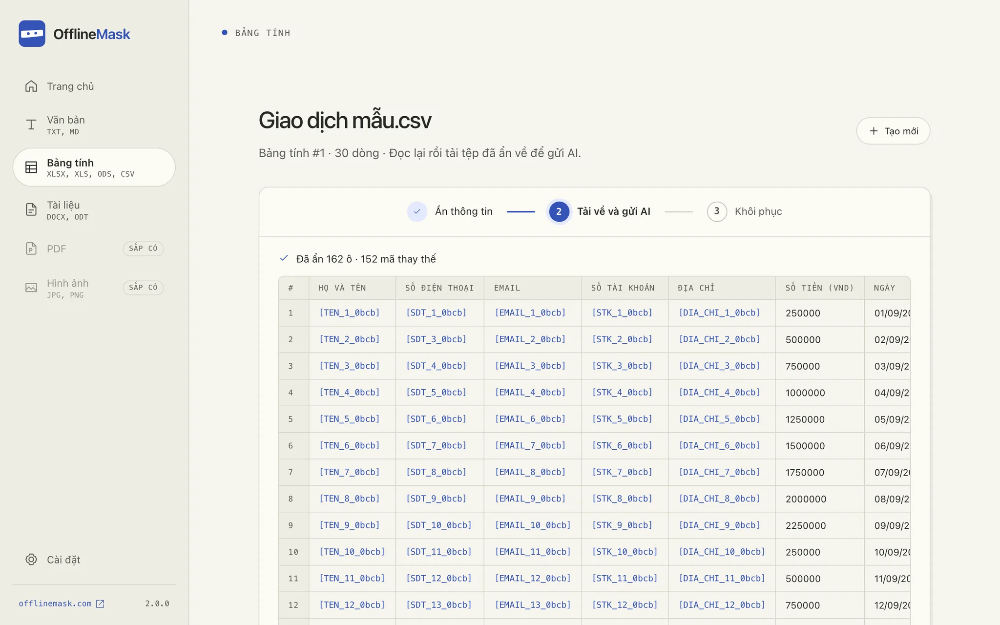

Việc gì cũng hỏi AI. Tên ai, số máy chẳng khai nửa lời.
OfflineMask thay tên, số điện thoại, số tài khoản…
bằng mã ngay trên máy bạn. Bạn vẫn hỏi AI như mọi khi.
Dán văn bản hoặc mở tệp. OfflineMask tự tìm số điện thoại, số tài khoản,
email… để bạn xem lại rồi ẩn.
Dán bản đã ẩn vào AI bạn hay dùng. AI vẫn hiểu đủ ý để tóm tắt, soạn thư hay
phân tích.
Dán câu trả lời của AI vào OfflineMask. Mọi mã tự đổi về thông tin thật, ngay
trên máy bạn.
Ngại chuyển qua lại? Bôi đen ngay trong ứng dụng bạn đang dùng để ẩn và khôi phục tại
chỗ. Xem Ẩn nhanh →
OfflineMask /Thư gửi bộ phận hỗ trợTìm thấy 5 thông tin
Bản gốc
Kính gửi bộ phận hỗ trợ,
Tôi là Nguyễn Minh Anh, chủ
tài khoản 001234567890. Ngày
08/09 tôi chuyển 2.500.000 đồng nhưng người nhận chưa nhận được, mã giao dịch
GD202609080126.
Xin liên hệ qua số
0901234567 hoặc
minh.anh@example.com.
Còn sót chỗ nào? Bôi đen là ẩn thêm.Ẩn thông tin
Công cụ AI của bạnChatGPT, Claude, Gemini…
Khách hàng [TEN_1_4e8c], tài khoản
[STK_1_4e8c], báo chưa nhận được giao dịch
[GD_1_4e8c]. Soạn giúp thư trả lời ngắn gọn.
AI chỉ thấy mã, không thấy tên thật
Chào chị [TEN_1_4e8c], chúng tôi đã kiểm tra giao dịch
[GD_1_4e8c] từ tài khoản
[STK_1_4e8c]: tiền đang được hoàn lại trong 24 giờ.
Nhắn cho AI…
OfflineMask /Khôi phụcĐã khôi phục 3 mã
Câu trả lời của AI
Chào chị [TEN_1_4e8c], chúng tôi đã kiểm tra giao dịch
[GD_1_4e8c] từ tài khoản
[STK_1_4e8c]: tiền đang được hoàn lại trong 24 giờ.
↓ Đổi mã về thông tin thật
Bản đầy đủ
Chào chị Nguyễn Minh Anh,
chúng tôi đã kiểm tra giao dịch
GD202609080126 từ tài khoản
001234567890: tiền đang được
hoàn lại trong 24 giờ.
Không cần dò lại từng mãSao chép bản đầy đủ
Thư mời nhận việc
Tìm thấy 4 thông tin
Ứng viên: Lê Thu Hà, CCCD
079198004521.
Vị trí: chuyên viên kế toán, bắt đầu từ 01/11, lương thử việc 15.000.000 đồng.
Liên hệ: 0912345678,
ha.le@example.com.
Soạn thư mời nhận việc cho [TEN_1_4e8c], CCCD
[CCCD_1_4e8c], vị trí chuyên viên kế toán, bắt đầu từ 01/11.
Giọng văn thân thiện.
Chào chị [TEN_1_4e8c], chúng tôi rất vui mời chị gia nhập công
ty từ ngày 01/11. Khi nhận việc, chị vui lòng mang theo CCCD
[CCCD_1_4e8c].
Đã khôi phục 2 mã
Chào chị [TEN_1_4e8c], chúng tôi rất vui mời chị gia nhập công
ty từ ngày 01/11. Khi nhận việc, chị vui lòng mang theo CCCD
[CCCD_1_4e8c].
Chào chị Lê Thu Hà, chúng tôi rất vui
mời chị gia nhập công ty từ ngày 01/11. Khi nhận việc, chị vui lòng mang theo CCCD
079198004521.
Đối chiếu thanh toán
Tìm thấy 3 thông tin
Ngày 05/10, công ty có MST
0312345678 chuyển 45.000.000 đồng vào
tài khoản 0071000123456.
Người liên hệ: bà Phạm Mai, kế toán
trưởng.
Đối chiếu khoản 45.000.000 đồng từ công ty MST [MST_1_4e8c] vào
tài khoản [STK_1_4e8c], rồi soạn thư xác nhận gửi bà
[TEN_1_4e8c].
Kính gửi bà [TEN_1_4e8c], chúng tôi xác nhận đã nhận 45.000.000
đồng từ công ty MST [MST_1_4e8c] vào tài khoản
[STK_1_4e8c] ngày 05/10.
Đã khôi phục 3 mã
Kính gửi bà [TEN_1_4e8c], chúng tôi xác nhận đã nhận 45.000.000
đồng từ công ty MST [MST_1_4e8c] vào tài khoản
[STK_1_4e8c] ngày 05/10.
Kính gửi bà Phạm Mai, chúng tôi xác
nhận đã nhận 45.000.000 đồng từ công ty MST
0312345678 vào tài khoản
0071000123456 ngày 05/10.
Hợp đồng thuê nhà
Tìm thấy 3 thông tin
Bên thuê: ông Trần Quốc Bảo, CCCD
079085001122, điện thoại
0987654321.
Thời hạn 12 tháng, đặt cọc 2 tháng tiền nhà, phạt chấm dứt sớm 3 tháng tiền nhà.
Rà soát hợp đồng thuê nhà của ông [TEN_1_4e8c], CCCD
[CCCD_1_4e8c], và chỉ ra điều khoản bất lợi cho bên thuê.
Hợp đồng của ông [TEN_1_4e8c] (CCCD
[CCCD_1_4e8c]) có hai điểm cần lưu ý: phạt chấm dứt sớm 3 tháng
tiền nhà, và tiền cọc không ghi thời hạn hoàn trả.
Đã khôi phục 2 mã
Hợp đồng của ông [TEN_1_4e8c] (CCCD
[CCCD_1_4e8c]) có hai điểm cần lưu ý: phạt chấm dứt sớm 3 tháng
tiền nhà, và tiền cọc không ghi thời hạn hoàn trả.
Hợp đồng của ông Trần Quốc Bảo (CCCD
079085001122) có hai điểm cần lưu ý:
phạt chấm dứt sớm 3 tháng tiền nhà, và tiền cọc không ghi thời hạn hoàn trả.
Làm việc với những gì bạn đã có.
Ẩn nhanh
Bôi đen ở đâu, ẩn ngay ở đó.
Bôi đen đoạn có thông tin riêng ngay trong ô chat với AI rồi bấm nút OfflineMask: chữ
được thay bằng mã tại chỗ. Khi dán câu trả lời vào Word, Zalo hay email, bôi đen lần
nữa để đổi mã về thông tin thật.
Trên macOS và Windows. Bật trong Cài đặt › Thao tác nhanh. Hoặc sao chép rồi bấm ⌘⇧M
(Ctrl+Shift+M).
Ứng dụng bất kỳChatGPT, Claude, Gemini…
Tóm tắt giúp tôi khiếu nại đơn hàng giao chậm ba ngày của
khách Nguyễn Minh Anh, số
0901 234 567.
Đơn hàng giao chậm ba ngày. Nên xin lỗi và gọi lại trong hôm nay cho
chị [TEN_1_7b2d] qua số
[SDT_1_7b2d].
Ẩn và khôi phục ngay tại chỗ
Bảng tính
Mở XLSX, XLS, ODS hay CSV. Ẩn cả cột họ tên, số điện thoại, số tài khoản rồi xuất một
bản riêng để gửi AI.

Tài liệu
Hợp đồng, biên bản dạng DOCX hay ODT. Giữ định dạng, lưu một bản đã xử lý.
Nhận diện
Email
Điện thoại
Số tài khoản
Số thẻ
CCCD
Hộ chiếu
Mã số thuế
Mật khẩu
Thêm họ tên, địa chỉ, tổ chức với gói tiếng Việt tùy chọn. Bạn luôn xem lại trước khi
gửi.
Lưu lịch sử
Muốn mở lại việc cũ? Đặt mật mã 6 số để lưu lịch sử trên máy. Không đặt thì đóng ứng
dụng là xong.
Không tài khoản
Không đăng ký, không đăng nhập, không máy chủ. Mở ứng dụng là dùng được ngay.
PDF và hình ảnh chưa được hỗ trợ. Luôn kiểm tra bản xuất trước khi chia sẻ.
Thứ AI thấy. Thứ ở lại với bạn.
Bản gửi AI chỉ có mã. Tên thật và bảng đối chiếu nằm yên trên máy bạn.
Máy của bạn
Bảng đối chiếu
Nguyễn Minh Anh[TEN_1_4e8c]
001234567890[STK_1_4e8c]
0901234567[SDT_1_4e8c]
minh.anh@example.com[EMAIL_1_4e8c]
Nằm trên máy bạn. Đặt mật mã nếu muốn lưu lại.
Ranh giới
Công cụ AI (ChatGPT, Claude, Gemini…)
AI chỉ thấy
Tôi là [TEN_1_4e8c], chủ tài khoản [STK_1_4e8c]. Có thể liên
hệ qua số [SDT_1_4e8c] hoặc email [EMAIL_1_4e8c].
Bạn tự sao chép hoặc tải lên. OfflineMask không kết nối với AI nào.
Muốn chắc chắn? Tự kiểm tra dễ dàng.
Không cần Internet. Tắt Wi‑Fi rồi dùng thử: ẩn và khôi phục vẫn chạy
bình thường.
Không gửi dữ liệu đi đâu. Không tài khoản, không thống kê sử dụng,
không tự cập nhật.
Chỉ tải thêm khi bạn bấm. Gói nhận diện tiếng Việt là tùy chọn, tải
một lần trong Cài đặt.
Mã nguồn công khai. Ai cũng có thể xem ứng dụng làm gì.
Xem trên GitHub ↗
Không cần. OfflineMask chạy hoàn toàn trên máy. Bạn chỉ cần mạng để tải ứng dụng và, nếu
muốn, gói nhận diện tiếng Việt.
OfflineMask có tìm ra hết thông tin cần ẩn không?+
Phần lớn, nhưng không phải lúc nào cũng đủ. Hãy xem lại các gợi ý và tự chọn thêm phần
còn sót trước khi gửi.
Khôi phục thông tin hoạt động thế nào?+
Mỗi thông tin được thay bằng một mã. Khi bạn dán câu trả lời của AI vào lại, các mã còn
nguyên được đổi về thông tin thật. Nếu AI sửa mã, phần đó sẽ không đổi lại được.
Vì sao máy báo ứng dụng chưa được xác minh?+
OfflineMask chưa đăng ký chứng chỉ với Apple và Microsoft, nên lần mở đầu tiên máy sẽ
hỏi lại. Làm theo
hướng dẫn cài đặt ↗
để mở ứng dụng.
Trên Windows, bản tải từ Microsoft Store đã được Microsoft kiểm duyệt và mở ngay. Trên
Mac, OfflineMask chưa đăng ký chứng chỉ với Apple, nên lần mở đầu tiên máy sẽ hỏi lại.
Làm theo
hướng dẫn cài đặt ↗
để mở ứng dụng.
Có kết nối với công cụ AI (ChatGPT, Claude, Gemini…) không?+
Không. Bạn tự sao chép bản đã ẩn sang công cụ AI mình dùng, rồi dán câu trả lời về
OfflineMask.
Hỏi AI thoải mái. Giữ khách hàng cho riêng bạn.
Phiên bản __OM_VERSION__ · Mã nguồn công khai · Không cần tài khoản